1.如何使用DOS命令
1.1 打开命令提示符窗口 （win+R）
1.按下 win+R
2.输入cmd
3.按下回车键（即enter）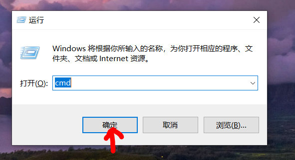
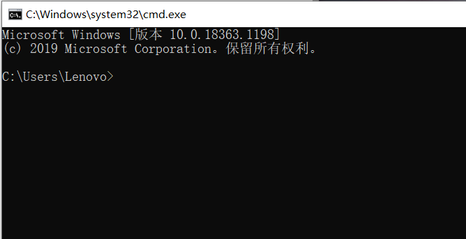
2常用的DOS命令
1.盘符切换
输入任意盘号+冒号，按下回车键
如( e：)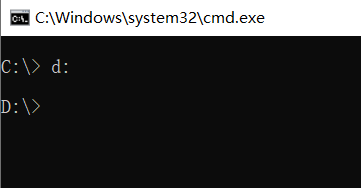
2.查看路径下内容
输入 dir ，按下回车键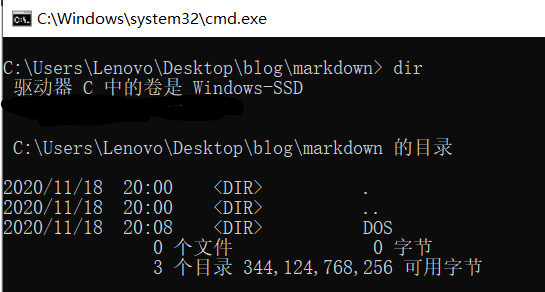
3.进入单级目录
输入 cd + 空格 + 要进入的目录
如( cd users )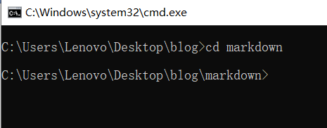
4.回退至上一级目录
输入 cd.. 按下回车键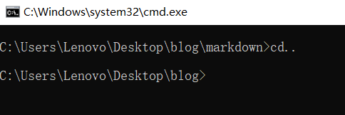
5.进入多级目录（==多次进入单级目录）
输入 cd + 目录1\ + 目录2\ + ...\ (直到目标目录),按下回车键
如( cd users\Lenovo\Desktop\... )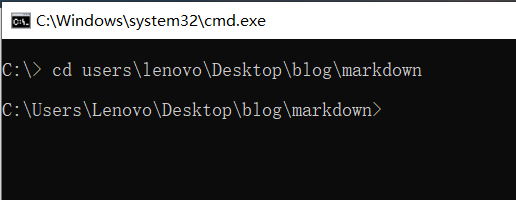
6.回退到盘符目录
输入 cd\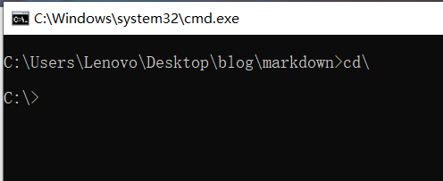
7.清屏
输入 cls ,按下回车键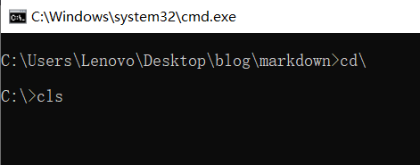
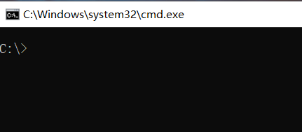
8.退出命令提示符窗口
输入 exit ，按下回车键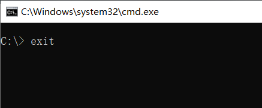